Zalando Design System
Designing clear, consistent iconography to improve warehouse app efficiency
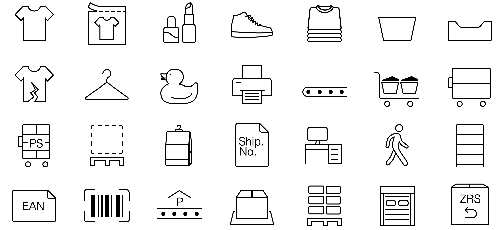
“What do these icons mean?”
On my first day at Zalando, I learned that warehouse workers struggled to tell some equipment icons apart. Warehouse apps rely heavily on custom iconography —often designed by developers. When icons aren’t clear, users can’t quickly understand their tasks, leading to delays and mistakes. The goal was to improve task performance (both speed and accuracy) by making the icons more intuitive and user-friendly.
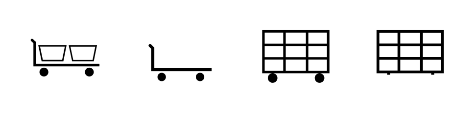
Icons, that were confusing for users, before the redesign.
Planning & design process
Together with my colleague Stephanie Marie Cedeño (with the support from other designers - Lekan Isaac, and Ben Ronning), we didn’t just redesign confusing icons — we followed a full design process to create a consistent icon system as part of a broader design system.
Why a design system?
Clear and consistent iconography improves task speed, reduces errors, and supports accessibility. For warehouse workers, this means faster onboarding (cutting training time from weeks to hours) and better performance, which directly impacts Zalando’s operations.
A design system also helps scale design and development by reducing the need to build components from scratch, allowing teams to focus on solving more complex challenges.
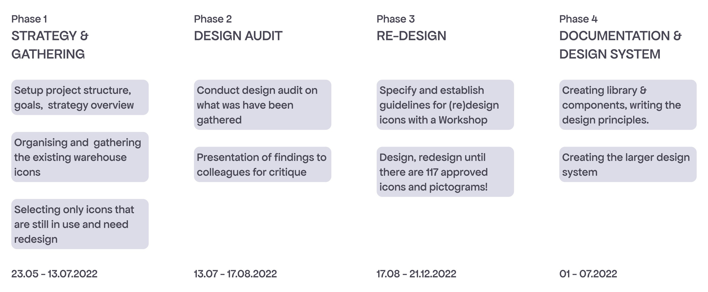
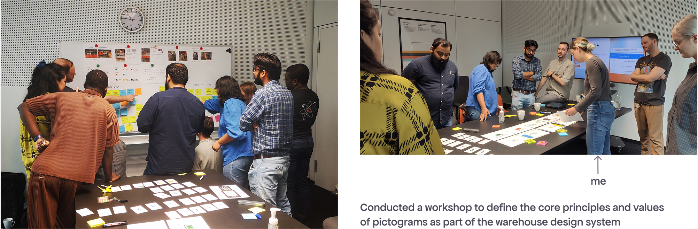
So many shelves!
Redesigning icons for real warehouse equipment was surprisingly fun. Even though many objects look similar, they serve different purposes (for example, the first three carts all have wheels and handles, meaning they’re meant to be moved).
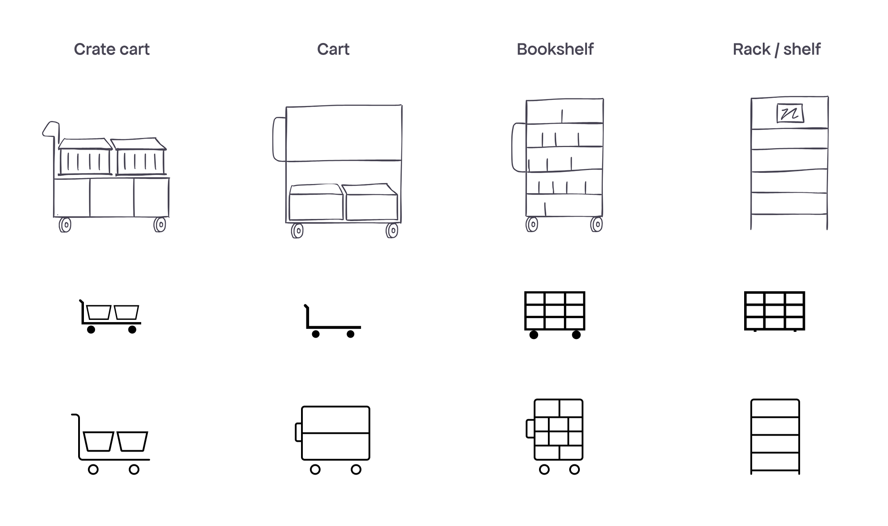
Icon states: empty/full
The full state is used when it helps clarify the task for users (e.g. “Bring a full container to the conveyor belt”). I visualised the full state based on how the objects typically look and function, highlighting their physical features while staying close to the original icons. I also removed unnecessary half-full states for some items to reduce confusion and keep the system clean.
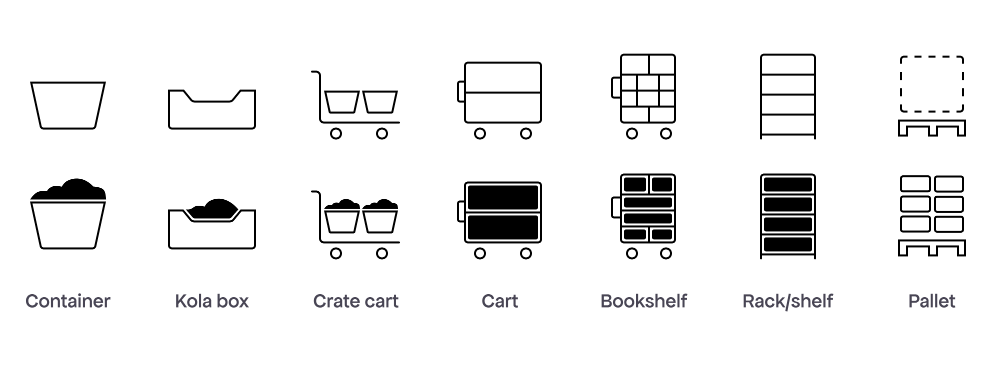
Pictograms that tell a story
Simple object icons (e.g. “Container”) are rarely used alone. In the warehouse app context, it’s easier to think in terms of “action + object” (e.g. “Scan Container”).
Beyond the design system, many of these "icons" are actually ”pictograms” telling a story. It’s important to design with that narrative in mind, guiding users through tasks visually.
The size of icons and pictograms varies depending on their type so that the stroke weight remains consistent.
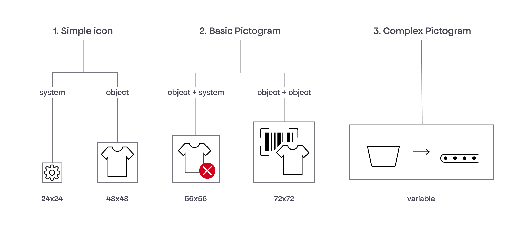
Anatomy & metrics of pictograms
Before the redesign, there were many inconsistencies, especially in pictograms. Setting up clear design rules prevented them.
The grids for Object and System icons are identical. There are 3 types of grids (square, horizontal and vertical rectangle) depending on the icon's shape.
Basic pictograms combine 2 icons and use 2 grids. The second icon overlaps the first, anchored at the bottom right, as shown in the green grid below (e.g. “Item” and “EAN”).
For ”Scan” pictograms, the design ensures a 3px padding around the object when the “scan” icon is trimmed.
Simple icons maintain a consistent 1px stroke and do not require resizing. Pictograms, on the other hand, are larger than Simple icons.
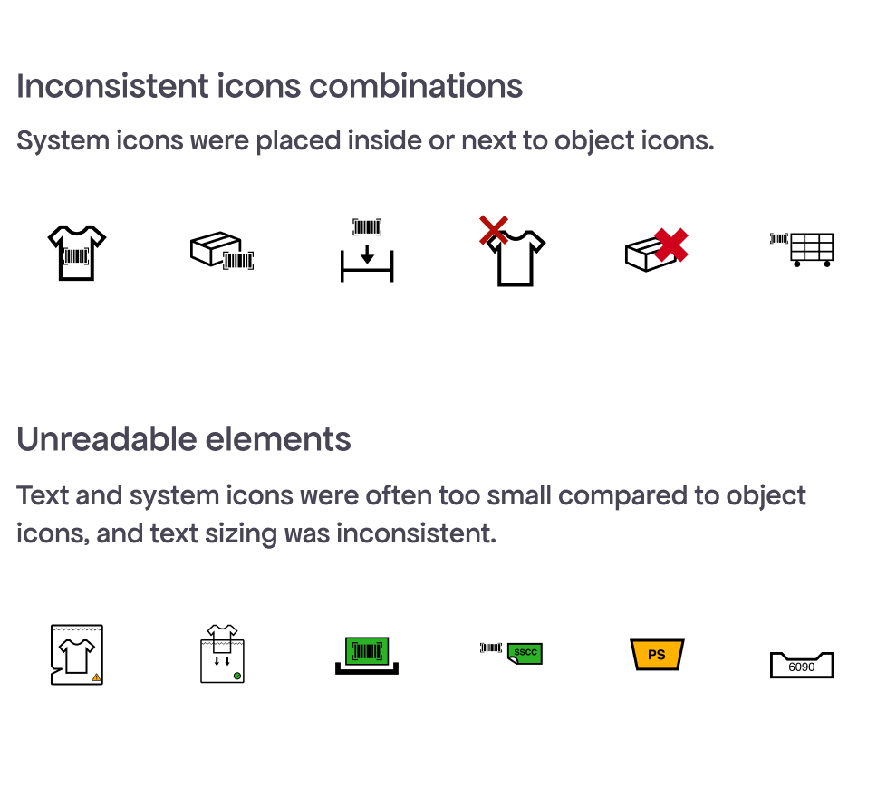
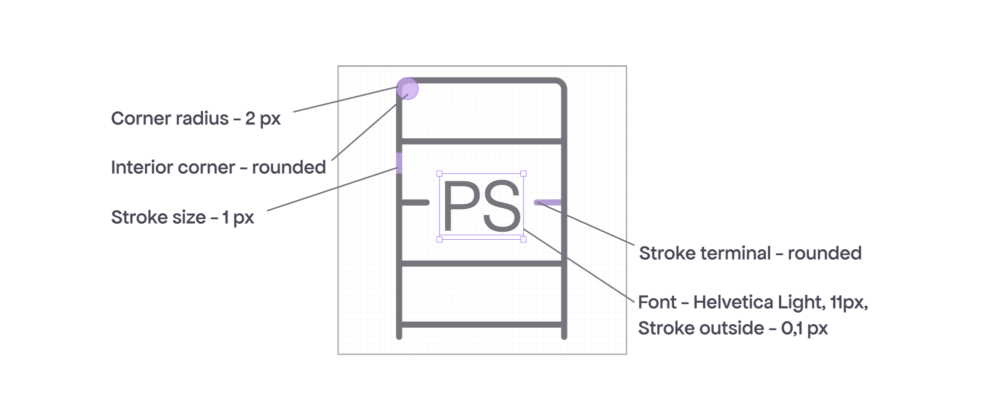
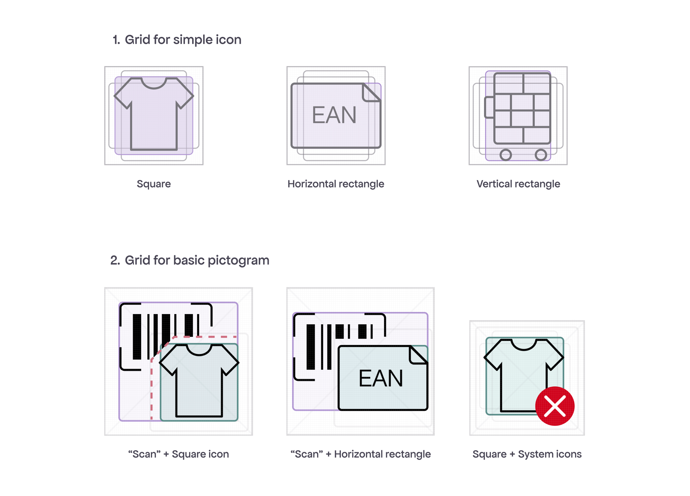
Introducing colour
Colour is functional — used mainly for statuses and to highlight specific states. While colour-coding is used heavily throughout the warehouse, UI icons and design system uses colour sparingly.
Green and yellow, except for the status colours, are used also in the SSCC and QL icons to help workers quickly identify which code to scan.
Some exceptions improve clarity. For example, Berlin Summer Orange highlights a specific crate the worker should focus on.
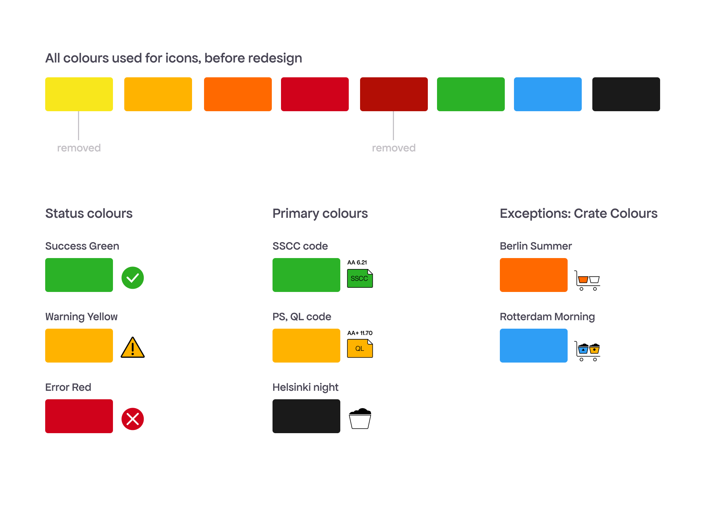
Icons complete!
Over 6 months, 117 icons and pictograms were designed and approved.
After the final presentation, where we introduced the team to the new icons and design principles, we celebrated by drawing icons on cookies as a fun way to reinforce what we’d just learned.
To truly validate the updated icons, contextual user research is needed. Testing icons out of the context is difficult, so many were instead evaluated as part of broader user testing, where task performance and clarity could be observed in app scenarios.
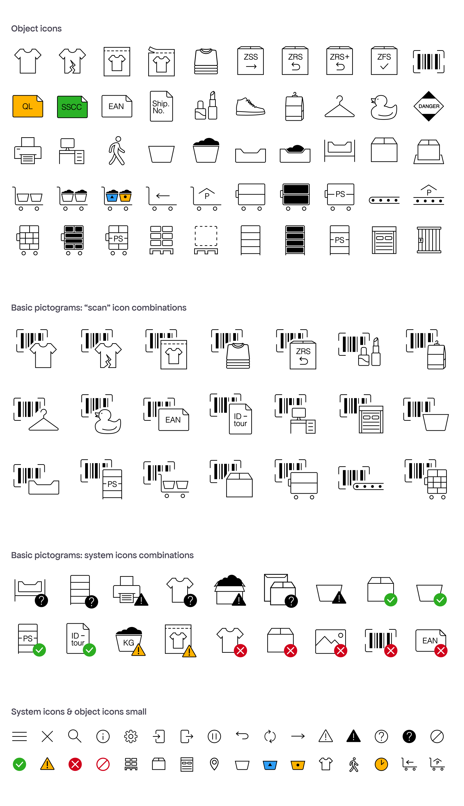
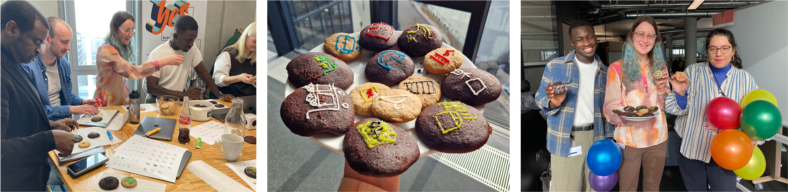
Components
I designed other elements (app bar, notification and location banner, instruction area, menu) and created screen templates for repetitive tasks for MDE device and Web apps.
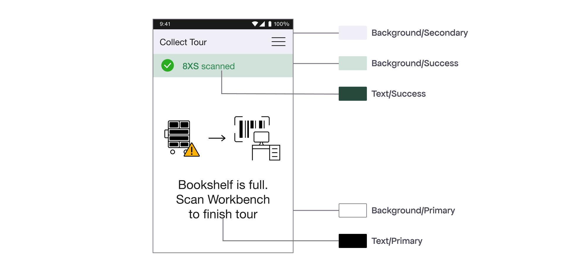
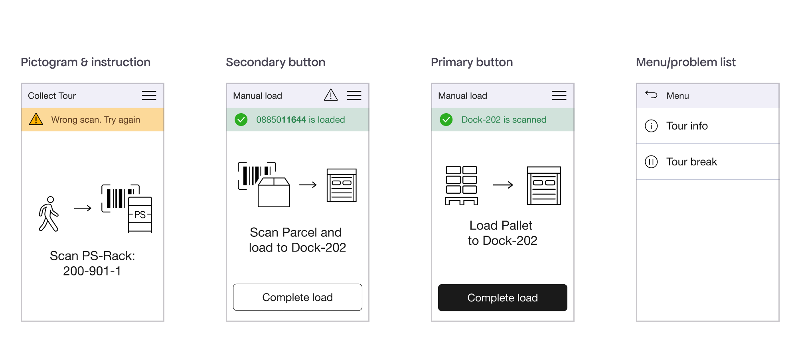
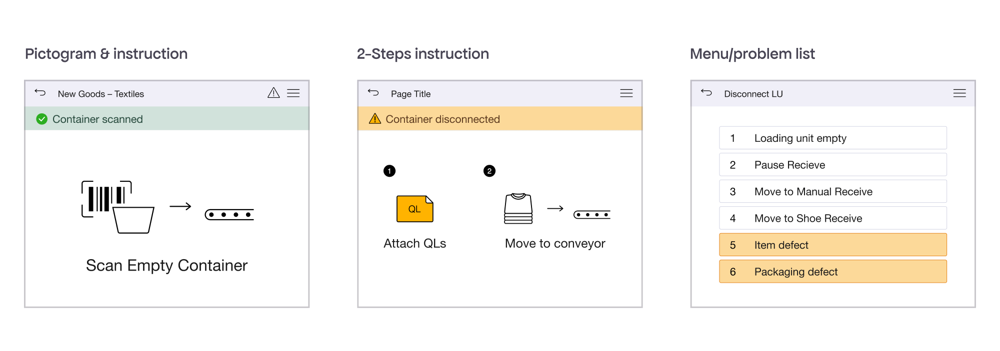
Bringing the design system to live
The new design system helps the Design team work faster and more consistently, and also frees developers from self-designed pictograms.
The biggest challenge was that all of the Product and Development teams weren’t aware of our goal to streamline the warehouse app design system.
Once it was ready, my colleague Ben Ronning and I looked for ways to introduce it across teams. We started designing several apps, gradually implemented the new system with consistent pictograms and UI elements.
Final thoughts
Working on the warehouse design system was a great opportunity to learn how warehouse processes work, which helped me design better warehouse apps later.
Even though I worked mostly independently (creating the icon set and learning how to build a design system) I had regular weekly check-ins with two design colleagues (Stephanie and Lekan), and monthly updates with the whole design team. Their feedback was incredibly valuable and helped prevent design mistakes early on.